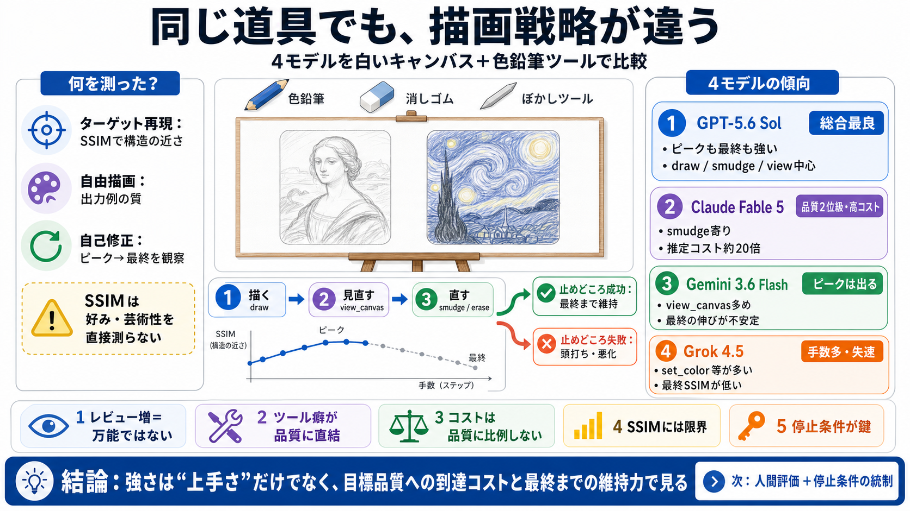

Claude Fable 5 vs GPT-5.6 Sol: Benchmarks, Pricing, Speed (July 2026) | BenchLM.ai
**1** category wins**2** category wins. Public leaderboard positions: Claude Fable 5#2(Supported); GPT-5.6 Sol#3(Support…

モナリザ / ゴッホ「星月夜」
文章プロンプトのみ（正解参照なし）
色選択 / 線の太さ・圧（濃淡） / draw / smudge / erase / view_canvas
ターゲット再現はSSIM中心（ピークと最終）
SSIM＝人の“好み”や“芸術性”を直接測らない
ピーク（最高点）→ その後は維持できるか
レビュー追加 → 最終が頭打ち／悪化
set_*をほぼ使わず、中心は
draw / smudge / view_canvas
set_color / set_brush / set_pressureの呼び出しが多い
＝手数増
ぼかし（smudge）依存が強い
view_canvas（レビュー）割合が高い
ピークも最終も相対的に強い
星月夜 / バラで高評価の出力
描画タスクではほぼ使い物にならない
最終SSIM：極めて低い
SSIMピーク：最高値の場面あり
最終：伸び鈍化・振れ幅大
2位相当（悪くない）
費用・時間：突出
推定トークン：約20倍
増やしても必ず最終品質は上がらない
（頭打ち→悪化あり）
道具呼び出しの設計が効率・挙動・品質へ直結
時間・トークンが品質に比例しない
構造近さは測れても“主観の上手さ”とは一致しない
手数が多くても自己修正が噛み合っていない可能性
描画（draw）で構造を作る
view_canvasで評価（SSIM等）
smudge/eraseで修正するが、
止めどころを誤ると悪化
画素・構造（structural）の一致
芸術的表現（筆致の意図、雰囲気）の一致
SSIM/RMSE＋時間・トークンで観測の再現性を上げる
目標到達までの最短経路（コスト最適化）が意思決定に効く
手数だけ多い失敗（Grok型）は品質リスクとして要検証
GPT-5.6：ピークと最終が強い
Grok：最終が崩れる（失速）
Gemini：ピークは出るが最終が伸びにくい
Claude：品質は高いがコストが重い
人間評価の併用／停止条件・探索戦略の統制で、因果に近づける
**1** category wins**2** category wins. Public leaderboard positions: Claude Fable 5#2(Supported); GPT-5.6 Sol#3(Support…
I Tested GPT 5.6 Sol vs Fable 5. What You Need To Know. Nate Herk | AI Automation 865000 subscribers 3966 likes 203636 v…
# GPT-5.6 Sol vs Claude Fable 5: Which Model for Your AI Agent? Illustration of an adventurer at a forking path under tw…
# GPT-5.6 Sol vs Claude Fable 5. The flagship-tier matchup: Sol's $5/$30 top model versus Claude Fable 5 for hard coding…
GPT-5.6 Sol (max) scores 1 point below Claude Fable 5 (max) in the Artificial Analysis Intelligence Index at 59 points, …